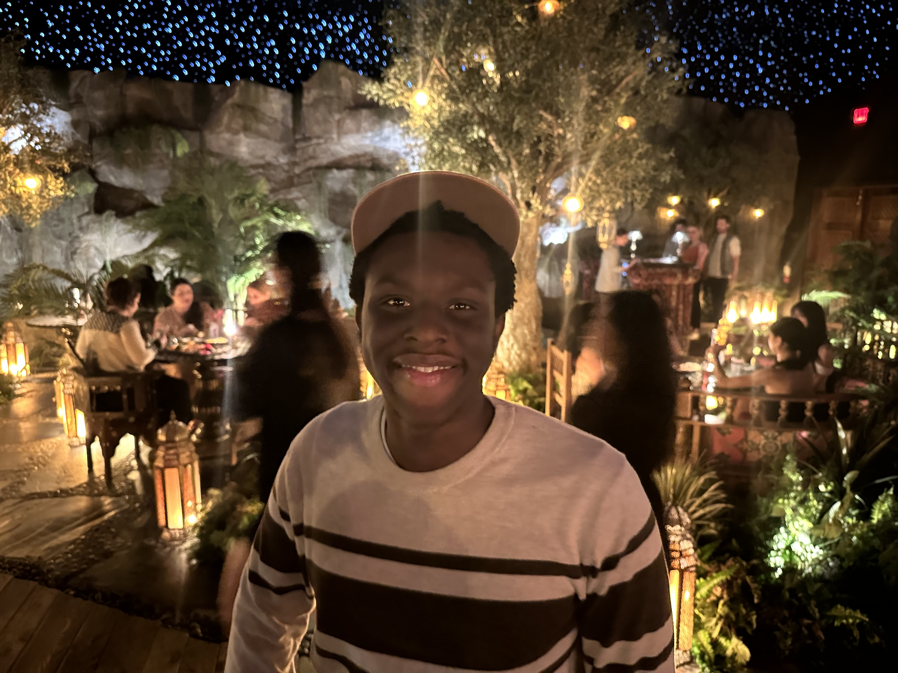

About Me
I’m a driven and curious sophomore at the University of Southern Mississippi, pursuing a degree in Computer Engineering. While my journey into the tech world began only recently, I’ve been diving in headfirst—exploring, learning, and building the skills that will shape my career.
My fascination with technology isn’t limited to what’s taught in the classroom. I spend a significant amount of my time taking online courses to push my knowledge further. From web development to data science and machine learning, I enjoy exploring the full spectrum of what’s possible in the digital space. Every project, tutorial, and late-night coding session adds another piece to the bigger picture I’m working toward.
On the technical side, I’ve built a solid foundation in several programming languages, including Python, C++, HTML, CSS, and JavaScript. These skills have opened the door to creating interactive websites, experimenting with algorithms, and even exploring the early stages of machine learning models. I see programming as both a logical challenge and a creative outlet—where solving problems is just as satisfying as creating something entirely new.
Although I haven’t landed my first internship yet, I’m actively preparing for that next step. I believe in consistent self-improvement, whether that’s learning a new framework, practicing coding challenges, or refining my ability to work in teams. For me, this stage of my career is about building a strong skill set, nurturing a problem-solving mindset, and laying the groundwork for bigger opportunities ahead.
Ultimately, my goal is to grow into a versatile engineer capable of contributing to meaningful, impactful projects—whether in software, hardware, or the exciting space where the two intersect. I’m not just here to keep up with the fast-moving tech industry; I’m here to be part of shaping it.